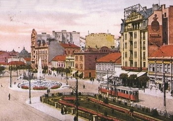

Čitanka: Beograd, 2. deo
90ih godina citat ili citati iz knjige "Terazije" Boška Tokina čuli su se često na radiju B92. Koji je tada bio glavni arbiter elegantiae i još štošta. Knjigu sam tada pročitala, nije bila baš nešto, uz to i prilično depresivna,ali su neki od zapisa o Beogradu upečatljivi i zanimljivi, ako ne baš tačni.
"Beograd je luda varoš. U neprekidnom pokretu i neprestanm prilagođavanju novim prilikama. Teško onome ko izgubi korak. Beograd je borben, strašan i lep, utočište i džungla, majka i maćeha, kinematografski simultan. Fotoženik. Život intenzivan, bujan, neharmoničan, ljudi neformirani. Prelaz od primitivnog čoveka do današnjeg diferenciranog, komplikovanijeg i suviše brz. Ubrzan. Mi smo nesumnjivo inteligentni, emocionalno ne mnogo duboki, nesposobni za grandiozna osećanja, ali mbiciozni, cinici, vizantinci i sposobni za pothvate. Veće i manje. Za svaku inicijativu i posao. Nemamo etiku i estetiku, ali imamo životnu snagu. Mozak i seksus više nego srce. Moža će seksus da nas spase, možda iz tih erotičnih momenata koji znače i zdravlje stvoriće naši naslednici estetiku. A možda će nas sport spasti. Sport i pezija koju ne volimo. Kosmička osećanja i sportske radosti. Preobraziće današnje haotično stanje i doneti spiritualizaciju. Sve je moguće. Za sve smo sposobni. Mi racionalni teatralni duhovi. Lišeni prave poezije, pravog soka života."
I još:
"Nesumnjivo: Beograd je evropeiziran i spolja i nešto iznutra. Standard je već bio tu. Ljudi u serijama. Amerikanska je bila sličnost i sa Vild Vestom. Bezobzirnost i nesentimentalnost. Ipak suro balkansko. Racionalno. Primitivno. Snažno. Često naivno."
Knjiga je izašla 1932. godine. A oprečnosti i preispitivanja identiteta ni sad nisu nestali. On the contrary. Dapače.
Bilo je, uostalom, kod nas već o međuratnom (I i II sv. rat) Beogradu.
 RSS feed
RSS feed
 sadržaji se objavljuju pod
sadržaji se objavljuju pod
Komentari
Jao što ja volim da vidim stare slike gradova. Meni nekako slike više govore o prošlosti jednog grada nego napisani tekst. Kada gledam ovu sliku kapiram da se suštinski ništa nije promenilo danas, ta netipizirana arhitektura plus današnji neuspešni pokušaji decentralizacije grada čine zapravo identitet našeg grada.
Mr No | 04.01.08 22:46
Medjuratni Beograd, ah! Tada su se mladi nalazili ispred Kasine i isli na izlete do Avale. To ja sve znam iz nekih knjiga koje sam citala vise puta.
feisty | 05.01.08 08:42
sto su dobri ovi citati! sazetak mentaliteta i kulture.
tekton | 05.01.08 12:28
Ja trenutno izuchavam Teshnjar kroz vekove
Ovi i ovakvi zapisi su stvarno fantastichni
Meni se chini da su neka reshenja onda bila bolja
Bolje se funkcionisalo
Ali je porazhavajuce kada shvatish koliko je mentalitet ostao isti, hajde, neka bude i slichan.
redsandra | 05.01.08 15:32
Beograd je uvek bio interesantan za sve posetioce bilo za domace ili za strane turiste.Tako da ,dodjite i vidite..........Pozzzzzzzzzzz
SLADJA | 12.01.08 19:19
Šta se dešava sa vama, jeste li u štrajku, što niko ne piše?
ubipacijentic | 22.01.08 16:58
U mojoj Bloglines listi ima 50 adresa, vecinom blogova, vecina ih je bila jako lenja ovog januara. Pa ni mi nismo izuzetak, ocito:)
la lara | 22.01.08 18:21
Znam, meni se ovih dana preklapaju termini za gledanje tenisa pisanje bloga. ;)
ubipacijentic | 22.01.08 23:11
U stvari, na skijanju smo vec tri nedelje...
ljubar | 23.01.08 10:20
Da, lenji smo zapravo u Sen Moricu
La Lara | 23.01.08 10:43